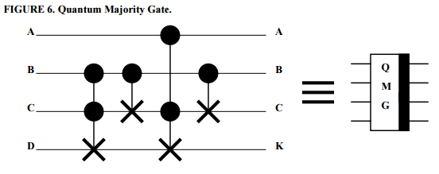
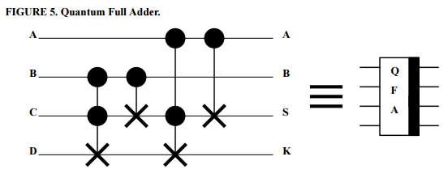
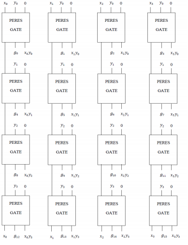
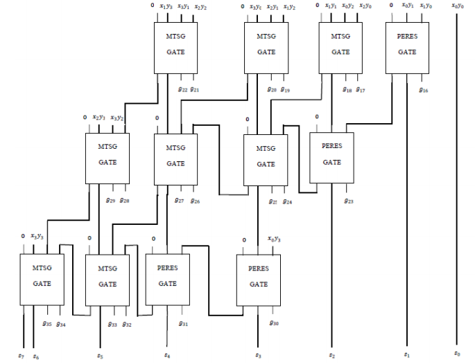

SQASM
Simple Quantum Assembler
Created by Ryan Watkins / @ryanwatkins_
What is SQASM?
- Quantum Simulator
- Quantum Programming Language
Quantum simulator
- Obeys laws of Quantum Mechanics
- Applies a Quantum Architectural model
- Quantum Arithmetic
- Carry-Save Adder
- Low quantum cost multiplier
- Deutsch-Jozsa(1992) algorithm implementation
- Interface to Quantum Programming Language
- Written from scratch in Python, will be released as GitHub project
- Highly extensible (could run Shor's algorithm)
Overview of Solution
The Quantum Simulator (Theoretical Quantum Machine) is a blackbox that is reliant upon the classical machine for input.
Classical compiled code is input to the quantum simulator. Quantum computation is done and data is passed back (Python objects representing registers or gates)
This data gets stored in a hashtable for later use by the compiler.
Quantum Architecture
- Quantum Registers
- Quantum Bits
- TODO
Initializing the Quantum System
- Amplitudes are the probabilities of our quantum states, represented in Binary format
setValinitialises a quantum register to a given state- Amplitudes $= 2^n$, where $n$ = quantum bit size
class QReg:
def __init__(self, n_qubits, setVal=-1):
self.n_qubits = n_qubits
self.qubits = [0] * n_qubits
self.amps = [0] * (1 << n_qubits) # 2^n_qubits complex numbers
self.amps[len(self.amps) - 1] = 1
if (setVal != -1):
self.amps[setVal] = 1
if (setVal != len(self.amps) - 1):
self.amps[len(self.amps) - 1] = 0
self.amps = np.matrix(self.amps).T Quantum Bits
- Can only be measured or observed
- The act of measuring causes a collapse, we return to discrete values of $\{0, 1\}$
- If $\{110\}$ or amps[$6$] = 1, then: $\{q_1, q_2\} = 1, \{q_3\} = 0$
- We can also say that these states are definite
- Given $2^3$ amplitudes in superposition, each state = $\frac{1}{\sqrt{8}}$
- Let's see this in practice...
Superposition
Quantum Bits
q = QReg(3, 5) # 3, num qubits, 5 specifies index to set 1
print('QReg Amplitudes are: %s' % q.amps.T) OUTPUT
QReg Amplitudes are: [[0 0 0 0 0 1 0 0]]
Quantum Gates?
Example of superposition by applying Hadamard
r = INITIALIZE(4) # Get quantum system with 3 qubits
qs.applyGate(t(HAD, ID, ID, ID), r) # Had bit1
qs.applyGate(t(ID, HAD, ID, ID), r) # Had bit2
qs.applyGate(t(ID, ID, HAD, ID), r) # Had bit3
qs.applyGate(t(ID, ID, ID, HAD), r) # Had bit4
print(r.amps.T) Output
[[ 0.25+0.j -0.25+0.j -0.25+0.j 0.25+0.j -0.25+0.j 0.25+0.j 0.25+0.j
-0.25+0.j -0.25+0.j 0.25+0.j 0.25+0.j -0.25+0.j 0.25+0.j -0.25+0.j
-0.25+0.j 0.25+0.j]] Quantum Gates
Hadamard Gate in Python
# np refers to usage of NumPy - www.numpy.org
HAD = np.matrix([[1 / sqrt(2), 1 / sqrt(2)],
[1 / sqrt(2), -1 / sqrt(2)]])
Other representations
$\begin{bmatrix} \frac{1}{\sqrt{2}} & \frac{1}{\sqrt{2}} \\ \frac{1}{\sqrt{2}} & \frac{1}{\sqrt{2}} \end{bmatrix}$
Quantum Gates
-
The simulator contains a generic tensor product function
Implements quantum majority gate outlined:def qmaj(self, r, qs): qs.applyGate(t(ID, T), r) # 1st op - Toffoli (b, c, d) qs.applyGate(t(ID, CNOT, ID), r) # 2nd op - CNOT (b, c) qs.applyGate(t(ID, SWAP, ID), r) # swap(b, c) - (a, c, b, d) qs.applyGate(t(ID, ID, SWAP), r) # swap(b, d) - (a, c, d, b) qs.applyGate(t(T, ID), r) # 3rd op - Toffoli(a, c, d) qs.applyGate(t(ID, ID, SWAP), r) # swap(b, d) - (a, c, b, d) qs.applyGate(t(ID, SWAP, ID), r) # swap(c, b) - (a, b, c, d) qs.applyGate(t(ID, CNOT, ID), r) # 4th op - CNOT (b, c)
http://arxiv.org/abs/quant-ph/9808061 (Phil Gossett 1998) Note:qsis an object of class QSimulator,applyGateperforms dot product
t which allows us to apply gates to our register. We can apply these two together by using the dot product
Implementation
Quantum Gates
- Usage of Identity gates (ID) to 'pad' certain bits, this is because we cannot just apply gates to one bit, it has to be to an entire registry
- The SWAP gate swaps one bit with an adjacent bit using unitary transformation. Adds Quantum cost.
Key things to note:
qs.applyGate(t(ID, T), r) # 1st op - Toffoli (b, c, d)$SWAP = \begin{bmatrix} 1 & 0 & 0 & 0 \\ 0 & 0 & 1 & 0 \\ 0 & 1 & 0 & 0 \\ 0 & 0 & 0 & 1 \end{bmatrix}$
Quantum Gates
- No cloning of information, just unitary transformations
- We can observe that there was 4 operations that we wanted to achieve from the set of bits $\{a, b, c, d\}$
$TOFFOLI\{b, c, d\}$
$CNOT\{b, c\}$
$TOFFOLI\{a, c, d\}$
$CNOT\{b, c\}$
Our swap gates allowed us to get the bits in the right order to do the operations!
Quantum Arithmetic
-

Toffoli (B, C, D), CNOT (B, C), Toffoli (A, C, D), CNOT (B, C)
Toffoli (B, C, D), CNOT(B, C), Toffoli (A, C, D), CNOT(A, C)
Source: http://arxiv.org/abs/quant-ph/9808061
Quantum Arithmetic
DEMO
Quantum Multiplier
- Uses PERES and MTSG gates
- Two subsections
- Partial product generation
- Summation of partial products
Quantum Multiplier: Partial Product Generation
Ref: International Journal of Advanced Research in Computer Engineering & Technology (IJARCET) Volume 4, Issue 4, April 2015
Quantum Multiplier: Partial Product Summation
Ref: International Journal of Advanced Research in Computer Engineering & Technology (IJARCET) Volume 4, Issue 4, April 2015
Quantum Multiplier Demo
Quantum Algorithms
- $\{0, 1\} \rightarrow \{0, 1\}$
- $f(0) = f(1)?$
- Classically requires two operations, calculate $f(0)$ and $f(1)$ and compare
Deutsch-Jozsa(1992) algorithm takes one evaluation time step as opposed to $2^n/2+1$ evaluations necessary in a classical machine
Somewhat arbitrary algorithm contrived to show power of quantum computation
Deutsch-Jozsa (1992)
We are reliant upon a oracle function: $U_f: \left|x\right\rangle \left|y\right\rangle \rightarrow \left|x\right\rangle \left|f(x)\oplus y\right\rangle$
$f(x)$ can only be constant or balanced
$\oplus$ = add mod 2
$f(0) \oplus f(1) = \begin{cases} 0 & \text{same} \\ 1 & \text{not} \end{cases}$
Deutsch-Jozsa (1992) Step One
- Hadamard both Qubits
In: $\Psi = \left|0\right\rangle \left|1\right\rangle$
$\Psi = \frac{1}{\sqrt{2}}(\left|0\right\rangle + \left|1\right\rangle)\frac{1}{\sqrt{2}}(\left|0\right\rangle - \left|1\right\rangle)$
$= \frac{1}{2}(\left|0\right\rangle(\left|0\right\rangle - \left|1\right\rangle) + \left|1\right\rangle(\left|0\right\rangle - \left|1\right\rangle)$
Note: we simplify to apply $U_f$
Deutsch-Jozsa (1992) Step Two
After applying $U_f$:
$\frac{1}{2}[\left|0\right\rangle (\left|f(0)\oplus0\right\rangle - \left|f(0)\oplus1\right\rangle) +\left|1\right\rangle (\left|f(1)\oplus0\right\rangle - \left|f(1)\oplus1\right\rangle)]$
Note: $f(0)=0 \implies (0 - 1)$
$f(0)=1 \implies (1 - 0) = - (0 - 1)$
$ = (-1)^{f(0)} (\left|0\right\rangle - \left|1\right\rangle)$
$ = \frac{1}{2}[(-1)^{f(0)} \left|0\right\rangle (\left|0\right\rangle - \left|1\right\rangle) + (-1)^{f(1)} \left|1\right\rangle (\left|0\right\rangle - \left|1\right\rangle)]$
$ = \frac{1}{2} (-1)^{f(0)}[\left|0\right\rangle + (-1)^{f(0) \oplus f(1)} \left|1\right\rangle] (\left|0\right\rangle - \left|1\right\rangle)$
Deutsch-Jozsa (1992) Step Three
Forget about second qubit
Same $\implies \left|0\right\rangle + \left|1\right\rangle$
Different $\implies \left|0\right\rangle - \left|1\right\rangle$
These are familiar states: they are obtained via Hadamard
Therefore, do the inverse of Hadamard, which is Hadamard itself
Deutsch-Jozsa (1992) Step Four
Hadamard 1st Qubit
$\Psi_{out} = \frac{1}{2}(1 + (-1)^{f(0) \oplus f(1)})\left|0\right\rangle \\ + \frac{1}{2}(1-(-1)^{f(0) \oplus f(1)})\left|1\right\rangle$
Measure first qubit: $\implies \begin{cases} 0 & \text{same} \\ 1 & \text{not} \end{cases}$
Deutsch-Jozsa in Python
P1: Hadamard all qubitsr = QReg(4, 0) # Initialise system w/ 4 qubits
qs.applyGate(t(HAD, ID, ID, ID), r) # Had 1st qubit
qs.applyGate(t(ID, HAD, ID, ID), r) # Had 2nd qubit
qs.applyGate(t(ID, ID, HAD, ID), r) # Had 3rd qubit
qs.applyGate(t(ID, ID, ID, HAD), r) # Had 4th qubit
P2: Apply $U_f$
qs.quantumOracle(function, r)P3: re-do part one
Deutsch-Jozsa in Python
P4: Perform measurementsfor qubit in range(4):
functionChanges |= (qs.measure(r, qubit) == 1)
if functionChanges:
print("FOUND RESULT: %s is balanced\n" % name)
else:
print("FOUND RESULT: %s is constant\n" % name)
Simple Quantum Assembler (SQASM)
- Interface for writing quantum programs
Input: example.SQASMINITIALIZE R 2
...
ADD 3 2 R2
MEASURE R2 RES
Output:--- ADD TERM TERM ---
Trying to call Quantum Simulator...
Elapsed time for add: 0.031271s
SUCCESS: ADD
SUCCESS: Python Simulator Function Call
SET HASH BIN: 50, Trying to receive key-pair from bin: 50
HASHTABLE FOUND VAL FROM KEY R2:
--- MEASURE TERM TERM ---
Found Register to measure:
Trying to call Quantum Simulator...
Amount of amplitudes in register 65536
selection range: [0, 15]
RES: [1, 0, 1, 0, 0, 0, 0, 0, 0, 0, 0, 0, 0, 0, 0, 0]
SUCCESS: Python Simulator Function Call